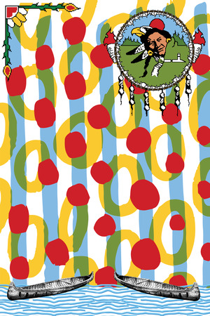
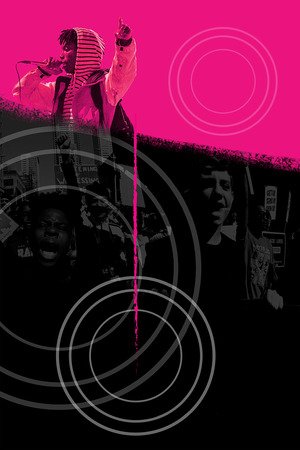
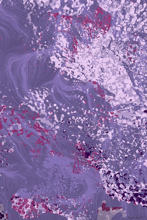
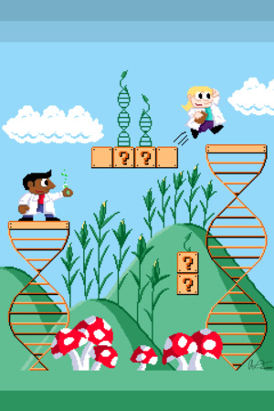
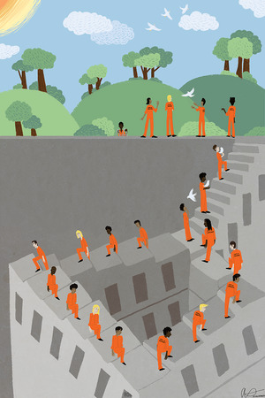
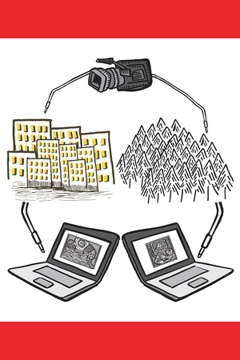
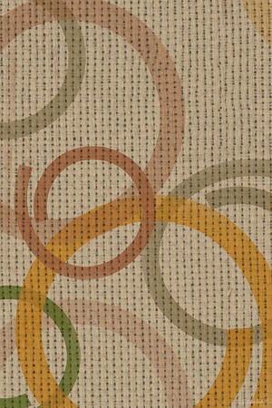
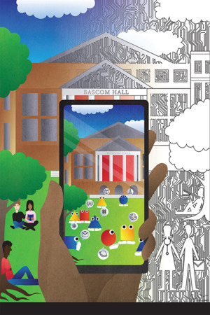
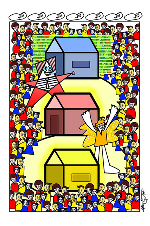
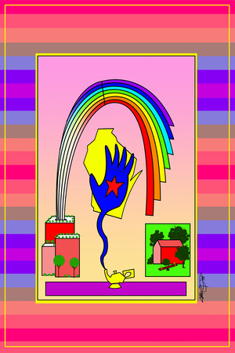

Transform Grants
Of 18 applications to the inaugural Grand Challenges Transform Initiative, four finalists will receive approximately $250,000 each to carry out innovative solutions for critical social and scholarly problems in education, health, and creative expression in Wisconsin and around the world.
Transform Grant Award Recipients
-
FOCUS Partnerships: Enhancing Mental and Behavioral Health for Children and Youth in Rural Wisconsin Communities
-

Building Capacity for Community-School-University Partnerships for Systemic Transformation
-

Mobilizing Youth Voices for Racial Justice
-
Sociocritical Literacy for Community Change and Equity
More Transform Proposals
-

The Healing Power of Education in New Times: New Directions for Trauma-recovery in Wisconsin
-
Transformative Global Citizenship Education Networks
-
Making Sports Safer for Children: Dissemination of Evidence-Based Safe Sport Recommendations to Wisconsin Coaches
-

CRISPR Ethics Game: Facilitating Critical Discussions of the Most Promising Science of the Century
-

Forgiveness Therapy to Improve Prosocial Well-Being and Behavior of Imprisoned Populations
-
UW Community Arts Collaboratory Arts-Integrated Summer School
-

Wisconsin StoryBridges
-

Circle of Care: A Transformative Model for Supporting Orphans' Education in Malawi
-
5Minutes4Myself: Creating Culturally Congruent Wellness Programs for Under-served Groups in At-risk Contexts
-
Everyday Academics: Unleashing the power of research through effective communication
-

Shaping Our Community: A Mobile App for Reaching Career Aspirations Through Data Science and Community Involvement
-
Awareness Matters: Conceptualizing Multilingualism as a Resource in Schools
-

Family Childcare in Crisis: Playgroups to Professionalize Caregivers and Raise Children's Multicultural Awareness
-

Community Schools Across Wisconsin

Contact us at grandchallenges@education.wisc.edu
if you would like to get in touch with any of our Transform teams.